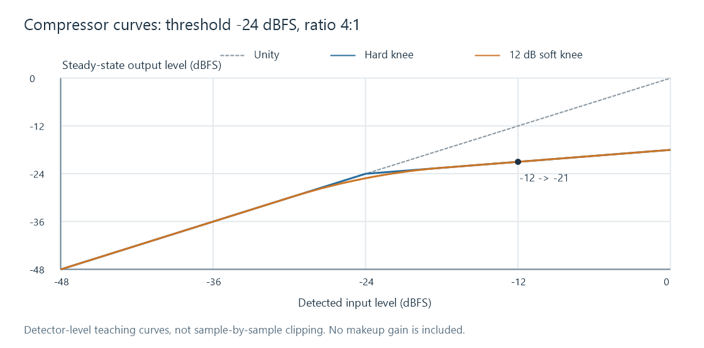
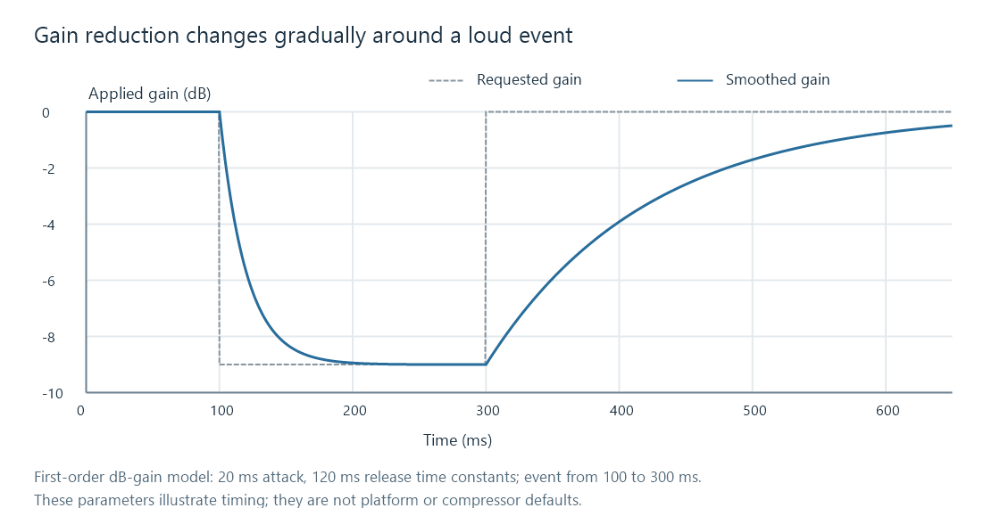

Dynamic range compression
Dynamic range compression varies gain according to signal level and time to reduce level contrasts within an audio programme.
Dynamic range compression changes the gain during a programme. Louder portions receive more gain reduction than quieter portions, according to the processor's settings. It can make a movie's dialogue and effects fit more comfortably into a limited listening level, or shape the impact of music.
This is level processing. The “compression” in a codec such as AAC concerns representing audio with fewer data bits and is a different operation. Dynamic range describes the variation being controlled; loudness normalization often applies one constant gain to an entire programme.
Threshold and ratio define the steady-state curve
A downward compressor begins reducing gain above a threshold. Its ratio specifies how much a level rise above the threshold is reduced. At 4:1, a 4 dB input rise produces a 1 dB output rise once the signal is in the compressed region.
For a hard-knee curve with threshold T and ratio R:
below threshold: output level = input level
above threshold: output level = T + (input level − T) / R
Take T = −24 dBFS and R = 4. An input level of −12 dBFS is 12 dB above threshold. Its output is −24 + 12/4 = −21 dBFS, a gain reduction of 9 dB. An input level of −30 dBFS remains −30 dBFS.

A soft knee rounds the transition between the uncompressed and compressed slopes. The plotted example begins that transition 6 dB below the threshold and completes it 6 dB above. Knee definitions and parameter units vary between processors; the figure uses an explicitly defined 12 dB transition width.
The curve shows steady-state detected levels, not an instantaneous rule applied independently to every positive and negative audio sample.
Makeup gain moves the processed programme
Compression on its own turns the louder portions down. Makeup gain raises the result afterward.
In the example above, adding +6 dB gives:
| Detected input level | Compressed level | After +6 dB makeup |
|---|---|---|
| Quiet portion: −30 dBFS | −30 dBFS | −24 dBFS |
| Loud portion: −12 dBFS | −21 dBFS | −15 dBFS |
The original contrast was 18 dB. The new contrast is 9 dB. The quiet portion is now louder than before, while the loud portion is still lower. That combination is the mechanism behind many “night listening” styles of processing.
Makeup gain is not automatically safe peak headroom. The static detector calculation does not include every transient, and attack behavior may let an initial peak pass. A limiter or a true-peak check serves another purpose.
Attack and release decide how the gain moves
The detector estimates a changing signal level. Attack governs the move toward greater reduction when that level rises. Release governs recovery when it falls. These parameters influence the sound as much as the static ratio.

This teaching model smooths gain reduction with a 20 ms attack time constant and a 120 ms release time constant. A time constant is not a waiting period followed by an abrupt switch: after one time constant, a first-order response has traveled about 63% of the way toward its new value. Real processors can define their timing differently and can use adaptive behavior.
A slower attack can retain the onset of a drum or effect. A very fast attack controls that onset more firmly. A release that is too slow for the material can keep the next quiet phrase suppressed; one that recovers very quickly can make the background audibly swell between louder events. Lookahead can provide advance knowledge of an upcoming peak by adding a delay to the signal being processed.
What the detector listens to
A peak detector responds to short excursions; an RMS-style detector responds to energy over a window. A sidechain can feed the detector from another signal or from a filtered version of the same signal. These choices determine when the compressor reacts, while the gain stage changes the programme being heard.
For stereo or surround content, channels can share a gain decision. Linking helps a sound stay in the same apparent location when it becomes loud in one channel. Independent reduction can change the left/right balance or the relationship between dialogue and other channels. The linked detector's method also matters; a maximum-channel detector and an averaged detector will not react identically.
An effect can turn down the dialogue around it
Consider a linked soundtrack whose detector reacts strongly to an effect. Its gain reduction can also attenuate dialogue that overlaps that effect. Release may keep the following dialogue reduced for a while after the effect has ended.
This is a concrete reason to inspect the detector and timing rather than assuming “more compression” always improves speech. A broadband compressor has no understanding of a speaker's words. Different sidechain weighting, separate processing before a mix, or a designed dialogue-enhancement process can produce different results.
The order of fixed gain and compression also matters. Raising the input by 6 dB before a fixed threshold pushes more material into reduction. Raising the output by 6 dB afterward leaves the detector's decision unchanged. Two controls both labeled “gain” can therefore produce different dynamics depending on their position.
Where compression enters a playback route
A movie can carry recommended dynamic treatment in codec metadata, or a player or receiver can run its own signal processor. The applied result depends on the decoded or passed-through route, selected mode, and device.
For Emby, identify the active audio track and where decoding occurs before interpreting a receiver's dynamic setting. A bitstream route can leave decoding and associated metadata treatment to the receiving device. A PCM route may have already applied processing upstream.
If the goal is hearing dialogue more easily, compression works on the level contrast. Dialogue normalization instead supplies a programme gain reference. A missing or misrouted centre channel calls for checking channel layout and downmixing, because reducing dynamics does not restore dialogue that never reached the intended output.